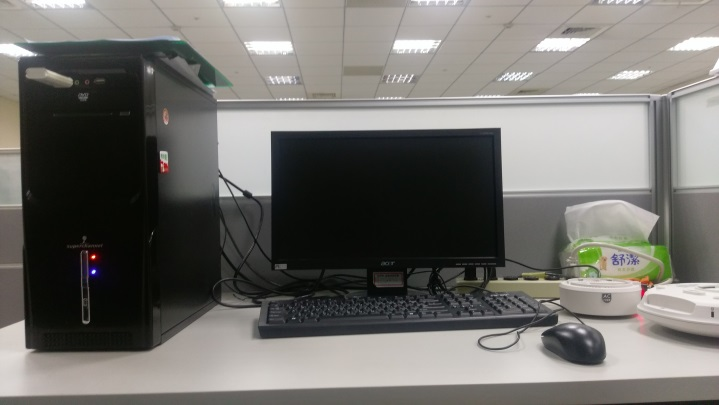
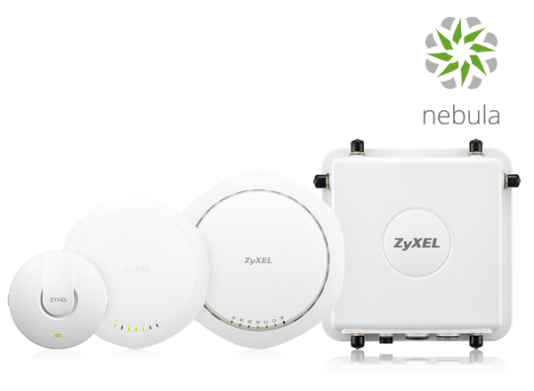

黃婕在新竹合勤做什麼
我們在新竹的合勤有兩名元智的實習生，資工系和資管系各一名，所屬的部門相同。資工系實習生主要是幫忙測試AP當設定成不同的狀況下，在shielding box中測出最大throughput的差異。我的工作主要是在幫主管比較合勤產品的新舊版本的throughput差異，和競品比較(benchmark test)，簡單來說就是比較合勤與其他品牌AP throughput的差異。
我測試的場所主要有兩個：地下室的演講廳和停車場附近的小隔間。演藝廳和小隔間的測試方式都大同小異，只是演藝廳主要是模擬在一個較大的房間來使用AP，測試時會把AP黏在牆上或是固定在桌子底下；小隔間主要是模擬使用者將AP貼在天花板上使用，測試時會將AP架高。


左圖為地下室演藝廳，右圖為停車場旁的小隔間
在測試之前的準備工作有以下幾項：要先將AP設定SSID(WiFi的名稱)、Security(是否加密、密碼設定)、Channel、Channel Width，這些設定的項目都從GUI中設定。GUI是Graphical User Interface的簡稱，中文翻譯是圖形化使用者介面，GUI將介面圖像化，讓使用者可以更方便操作。除了設定AP以外還要將AP固定在正確的地方，還有下載Firmware，將Firmware改成工程師所要求的版本。最後當主管交代的測試項目測試完時，就回報主管測試結果，傳送填好的Excel檔表格，如果測試出來發現AP有異常，排除問題以後主管就會回報問題給負責的RD組員，並且複製當時出問題的環境，請他們來處理。演藝廳和停車場旁小隔間的表格因應測試AP的擺法不同而有所差異。演藝廳內需測試的點有四個，分別為nearby、演藝廳兩側最後一排的座位後的兩個點和一個在演藝廳外的點，將client擺放在各個位置測Tx和Rx，還有5g和2.4g，一般狀況下共要測出48個數據；小隔間需測試的點，有五個分別為nearby和離AP越來越遠的其他四個點，將client擺放在各個位置測Tx和Rx，AP架會旋轉總共有4個角度還有5g和2.4g需要測試，一般狀況下共要測出68個數據。其中Tx是transmit(發送)，指的就是上傳速度，Rx是receive(接收)，就是下載速度，我們通常在測試throughput時會將server到client設為Tx，client到server設為Rx。
力仁、鈞婷在台北合勤做什麼
在台北合勤的實習生只有元智資管的我們兩個人，所屬的部門都是研發八部。以下是我們的座位，基本上都是在自己的位置上做測試，因為合勤科技主要的產品是網路設備，像是無線基地台、乙太網路交換器、雲端網路等，所以這些測試當然就是關於這些產品。
 wifi連線測試
(1)利用不同的firmware測試各路由器的wifi能否正常連線
(2)Multi-logout
(3)captive portal AUTH_TYPE DB消失
(4)測試預定的時間到wifi會不會自動被切斷
(5)SSID的名稱裡包含一些特殊符號，看是否可以正常連線不會出錯
test plan測試
目前測過NXC2500、NAP303的test plan測試，其中包括CLI test是打指令跟GUI test是用網頁去修改設定。CLI常用到資訊有show manager vlan可以看IP 位址、show version可以看AP的版本跟裝置、show running-config 可以看AP的設定、show users all可以看此台機器的wifi連線者有誰。
Nebula測試
Nebula是合勤的雲端網路管理無線基地台，測試連上雲端的無線網路基地台，無線基地台連上cc後透過cc做修改，看有沒有正確推 config 給無線基地台。
zon test
運用ZON Utility軟體，看AP的資訊以及改更設定。